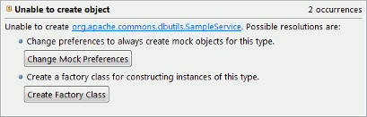

The Unable to create object test generation issue occurs when CodePro is unable to create an instance of a particular class. This can occur for many reasons. It could be that the class is an interface or an abstract class with no implementations. It could be that the implementations are not accessable from the test code. Or it could be that CodePro was unable to invoke the constructors of the class. In any case, there are generally two automatic resolutions that CodePro offers for this issue.

The Create Mock Object resolution adjusts CodePro’s mock object preferences to indicate that CodePro should create a mock object for this class. This resolution will affect all places where CodePro attempts to instantiate this class. If mock object support is not enabled, the user will be given the option of enabling it. See the mock object documentation for more information.
The Create Factory Class resolution creates a factory class for this type of object. This resolution is not available in all situations, like when the class in question is loaded from a jar library. CodePro will use the factory class to create instances of the object when they are required. Like Create Mock Object, this resolution will affect all places where CodePro attempts to instantiate this class.
Mock objects are quick to use and work well in many situations. Factory classes give you a high degree of control over the created objects. The best choice of resolution depends on the situation and your particular programming style.